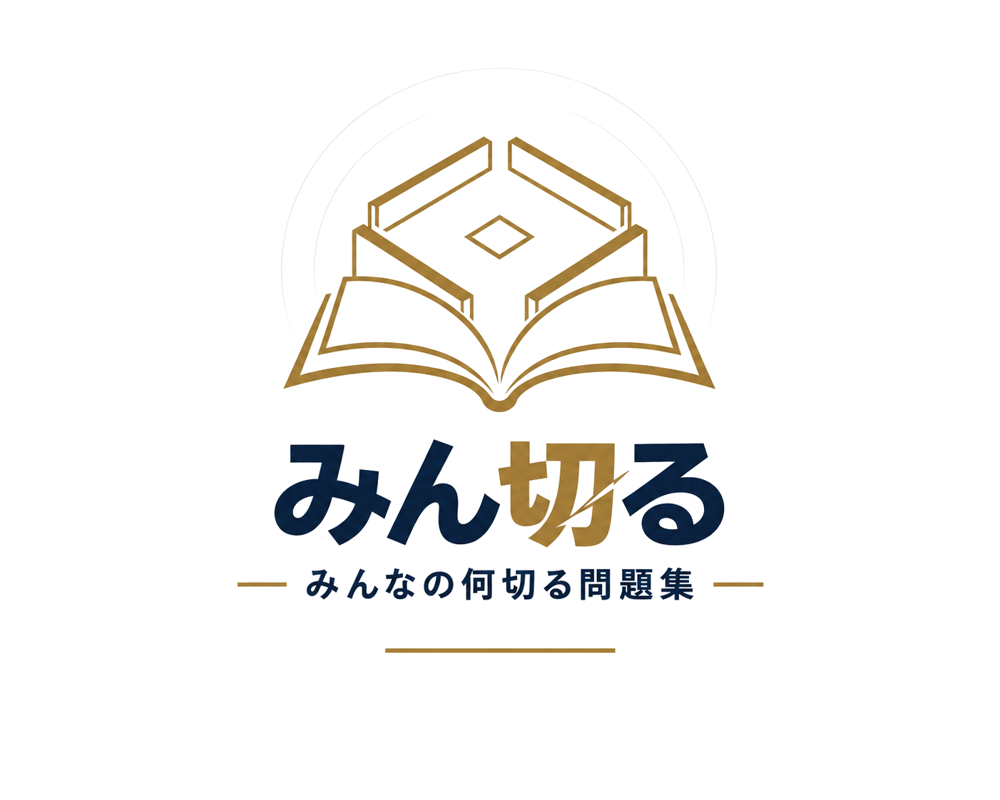
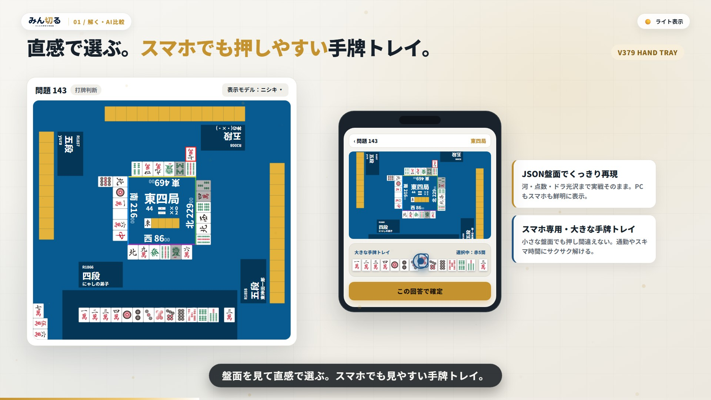
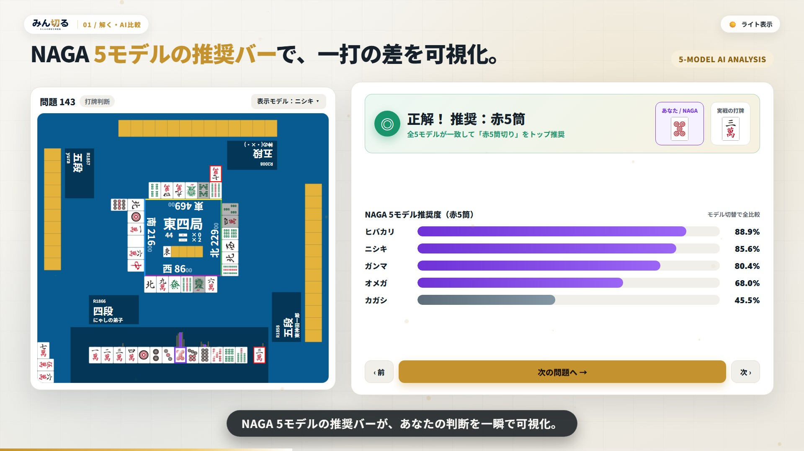
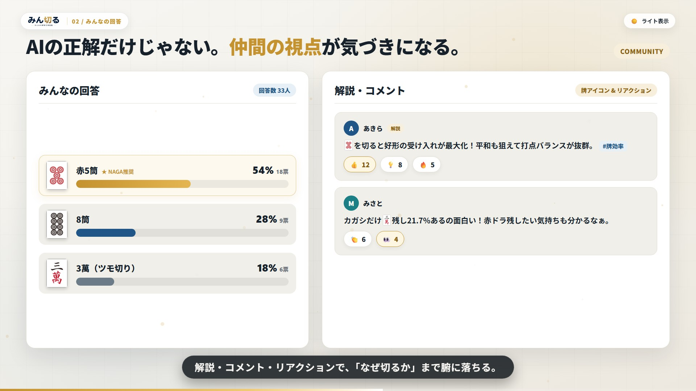
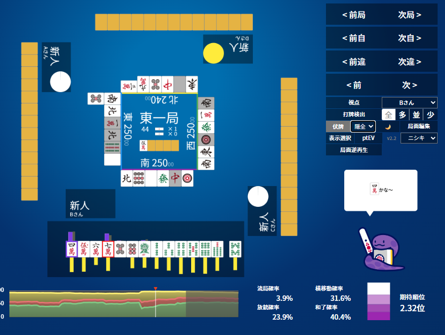
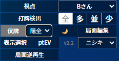
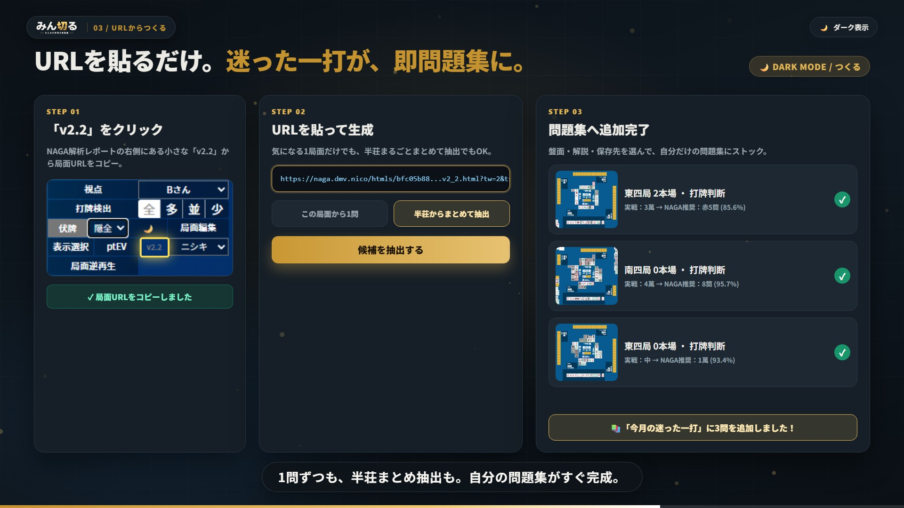
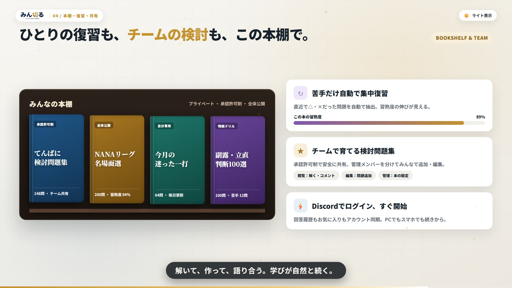

Discordでログイン
アプリを開いてログインします。回答履歴・お気に入り・習熟度は同じアカウントでPC・スマホ間に同期されます。
みん切る 使い方ガイド
NAGAで解析した局面をURLひとつで問題集に。5モデルの推奨バーや仲間の回答・コメントと見比べながら、何度でも復習できます。

INTRO MOVIE / 60秒で紹介
解く・AIと比べる・みんなの意見を見る・URLから作る・本棚で続けるまでを60秒にまとめました。
01 / 解く・比べる
PCでもスマホでも直感的に解けます。回答した瞬間に、NAGA 5モデルの推奨バーと仲間の選択が一目でわかります。
アプリを開いてログインします。回答履歴・お気に入り・習熟度は同じアカウントでPC・スマホ間に同期されます。
本棚で気になる1冊を開き、未回答・苦手・全問からスタート。途中でやめても前回の続きから再開できます。
牌や鳴きを選んでこの回答で確定。NAGA推奨バー、「みんなの回答」、解説・コメント・リアクションで理解を深めます。



02 / つくる
用意するのはNAGAで解析済みのURLだけ。気になる1局面をピンポイントで作ることも、半荘からまとめて抽出することもできます。



03 / 共有する・続ける
NANAリーグなどのチーム検討問題集（例：「てんぱに問題集」）を承認許可制で安全に共有。自分の弱点復習も自動でサポートします。
| 権限 | できること |
|---|---|
| 閲覧 | 問題を解く・みんなの回答を見る・コメントやリアクションで検討する。 |
| 編集 | 閲覧に加え、問題の追加・編集・整理を行う。 |
| 管理 | 問題の追加・編集・整理と、本の名前・説明・色の変更。作成者が管理メンバーを指定可能。 |

直近で△・×だった問題を 苦手 に自動集計。本棚からそのまま復習を始められます。
見返したい一打に ☆ を登録。この本の成績 で悪手回避率や回答数も確認できます。
問題一覧の「反応」列で議論が活発な問題がすぐわかり、コメント本文やタグから検索できます。
画面上部の太陽・月ボタンでライト／ダーク表示を即切替。選んだ表示はブラウザーに保存されます。
04 / よくある質問
NAGAで解析済みのレポート・局面URLを使用します（解析前の生の牌譜URLでは生成できません）。1問だけ作るときはNAGAで対象局面を表示し、右側の v2.2 をクリックしてコピーしてください。
URLがNAGA解析済みか、対象プレイヤーと出題したい局面が合っているかご確認ください。初回読み込み後にプレイヤー名を選び直して再抽出する場合があります。取得できない局面や未対応の局面は保存できません。
はい。新しい問題集の初期値は プライベート です。チーム共有なら 承認許可制、アプリ利用者へ公開するなら 全体公開 を選べます。
いいえ、コメントはみん切る内のみで共有され、Discordへ自動転送されません。検討してほしい問題があるときは、本のURLとあわせてチームへ案内してください。
回答履歴やお気に入りは同じDiscordアカウントで自動同期されます。途中の出題順・位置およびライト／ダーク表示は端末・ブラウザーごとの保存です。
自動生成されるのは盤面データとNAGAの推奨データです。文章解説は自動生成されないため、考え方や補足はコメント機能で自由に書き加えてください。
なぜかテーマソングまでできました。麻雀が強くなる効能は、たぶんありません。
「一打の向こうへ」／男性ボーカル・文字PV／3分05秒
動画を直接開く ↗